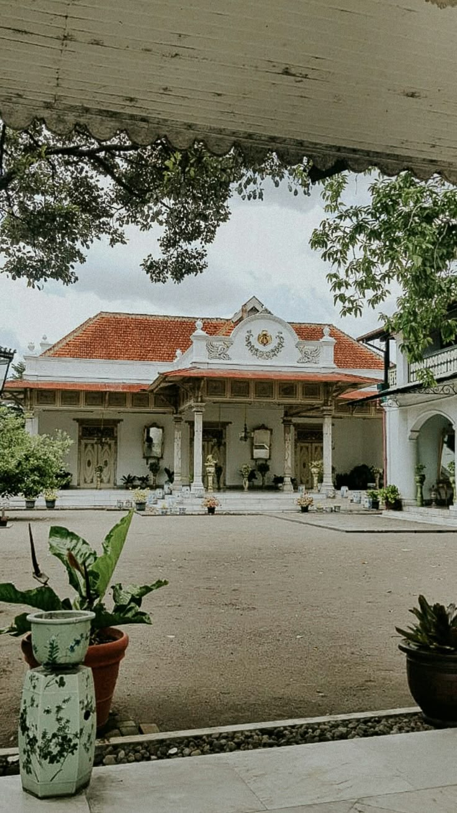
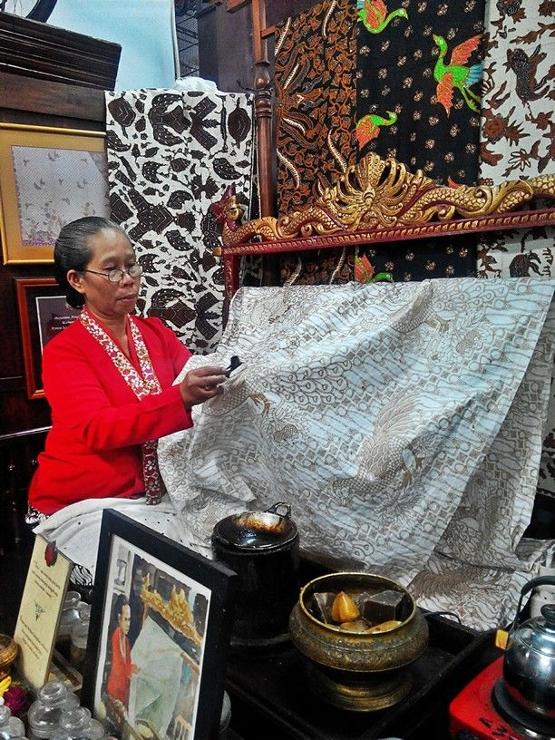
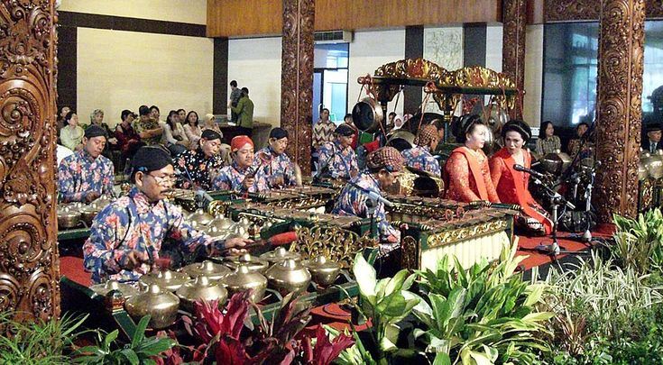

Jejak Kesultanan

Kelahiran Kota Budaya
Sejarah Yogyakarta tidak lepas dari Perjanjian Giyanti tahun 1755 yang membelah Kerajaan Mataram Islam. Pangeran Mangkubumi membangun keratonnya di kawasan hutan beringin dan memberi nama Ngayogyakarta Hadiningrat.
Hingga hari ini, Keraton bukan sekadar kediaman Sultan, melainkan sumbu filosofis dan penjaga kebudayaan Jawa — memastikan tradisi tak luntur tergerus modernitas.
Kekayaan Seni & Tradisi

Batik Klasik Sogan
Membatik bukan sekadar menggambar di atas kain, melainkan menulis doa dan filosofi. Corak Sogan dengan dominasi cokelat tua dan hitam adalah identitas batik tulis keraton yang UNESCO akui sebagai warisan budaya dunia.

Harmoni Gamelan
Alunan instrumen gamelan mencerminkan karakter masyarakat Jawa yang mengedepankan keselarasan dan ketenangan batin. Setiap instrumen memiliki peran, tak ada yang mendominasi — filosofi gotong royong dalam nada.